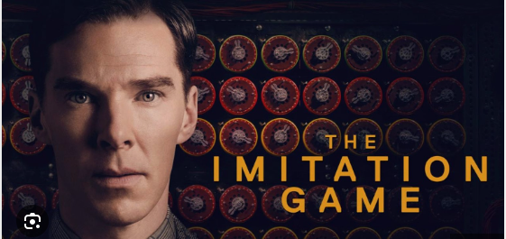
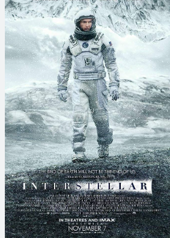
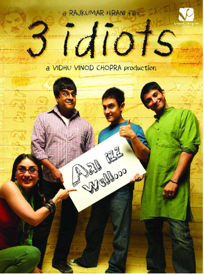

Its about Alan Turing the great mathematician ,Father of AI and Computer,about how he decode the German's Enigma machine which is used to secretly communicate between the Arm Forces in Germany during World War 2
This movie best to watch if like astronomy,space ,black hole theories.
Its a Hindi Movie depicting the life of enginners in India.It gives the message of not to Run Behind the Success. Instead search for Excellence. Success will be below your fits
